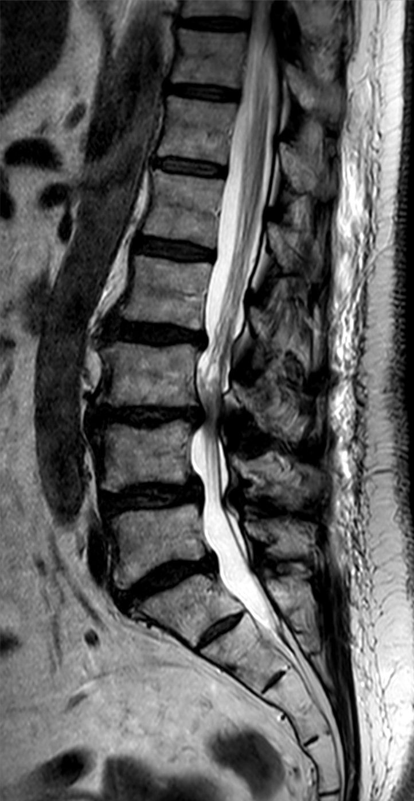

Ficha del catálogo
Estenosis del canal lumbar
- Sistema
- Nervioso
- Modalidad
- RM
- Región
- Columna lumbar y canal raquídeo
- Dificultad
- Intermedio
La estenosis del canal lumbar es la reducción del espacio disponible para los elementos nerviosos en el canal raquídeo, los recesos laterales o los agujeros de conjunción. La causa más frecuente es degenerativa, por combinación de protrusión discal, hipertrofia facetaria y engrosamiento del ligamento amarillo. Se manifiesta con claudicación neurógena, es decir, dolor y parestesias en miembros inferiores al caminar que mejoran al sentarse o flexionar el tronco.
Técnica
Resonancia magnética de columna lumbar con secuencias sagitales y axiales potenciadas en T1 y T2, orientando los cortes axiales paralelos a cada disco. La tomografía se emplea cuando la resonancia está contraindicada o cuando interesa valorar hueso e instrumentación.
Qué observar
- Reducción del diámetro anteroposterior y del área del saco dural
- Hipertrofia del ligamento amarillo y de las articulaciones facetarias
- Protrusión o abombamiento discal circunferencial
- Espondilolistesis degenerativa y su grado
- Compromiso del receso lateral y del agujero de conjunción
- Agrupamiento o redundancia de las raíces de la cola de caballo
Hallazgos
Estrechamiento del canal con pérdida del líquido cefalorraquídeo alrededor de las raíces, que adoptan una disposición agrupada en los cortes axiales. La combinación de abombamiento discal anterior, hipertrofia facetaria posterolateral y engrosamiento del ligamento amarillo produce el aspecto trilobulado o en trébol característico. En casos avanzados aparecen raíces redundantes y serpiginosas en el plano sagital por encima del nivel estenótico.
Perlas
La correlación entre la gravedad radiológica y la clínica es limitada, por lo que la decisión terapéutica se basa en el conjunto del cuadro y no solo en las mediciones. El estudio en decúbito puede infraestimar la estenosis, ya que la extensión y la carga axial en bipedestación reducen aún más el calibre del canal.
Diagnóstico diferencial
- Enfermedad arterial periférica
- La claudicación es vascular, aparece a distancia fija, no mejora con la flexión del tronco y se acompaña de pulsos disminuidos.
- Polineuropatía
- Síntomas simétricos y distales permanentes, sin relación con la postura ni con la marcha.
- Hernia discal focal
- Compresión radicular localizada en un solo nivel y lado, con dolor radicular en un dermatoma definido.
- Quiste sinovial facetario
- Lesión quística adyacente a la articulación, que comprime de forma focal el receso lateral.
Simuladores
- Lipomatosis epidural que reduce el canal por acumulación de grasa
- Aracnoiditis con agrupamiento anómalo de raíces
- Artefacto de volumen parcial en cortes axiales mal angulados
Por modalidad
- TC
- Define mejor la hipertrofia ósea facetaria, la osificación ligamentaria y el estado de material de fusión.
- RM
- Muestra directamente las raíces, el saco dural y los tejidos blandos, incluido el ligamento amarillo, sin radiación ionizante.
Protocolo
Sagital T1 y T2 de toda la columna lumbar más axiales T2 angulados por disco desde el nivel superior afectado hasta el sacro; en casos seleccionados se recurre a estudios en carga o con flexoextensión para valorar componentes dinámicos.
Clasificación
Se describe por localización en central, de receso lateral y foraminal, y por gravedad en leve, moderada y grave. Existen esquemas basados en la morfología del saco dural y en la proporción entre líquido cefalorraquídeo y raíces en los cortes axiales.
Errores frecuentes
- Informar la gravedad sin correlacionar con la clínica de claudicación
- Valorar solo el canal central y omitir el compromiso foraminal
- Angular mal los cortes axiales y sobrestimar la estenosis por volumen parcial

estenosis lumbar claudicación neurógena ligamento amarillo receso lateral cola de caballo columna degenerativa